In 1976 nasa landed 2 viking space craft on the mars .
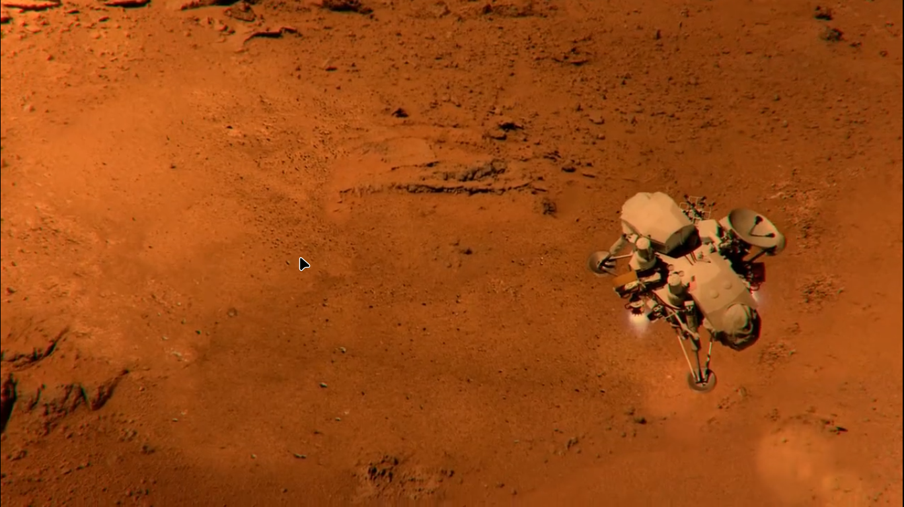American engineers send radio waves on moon , they got back the reflected rays .
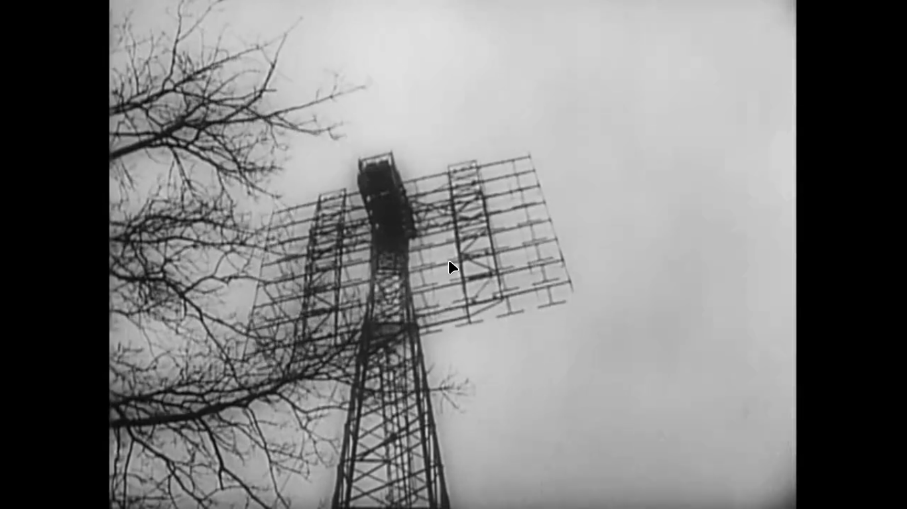Radio waves travelling at light speed took almost 1 second to reach to the moon .
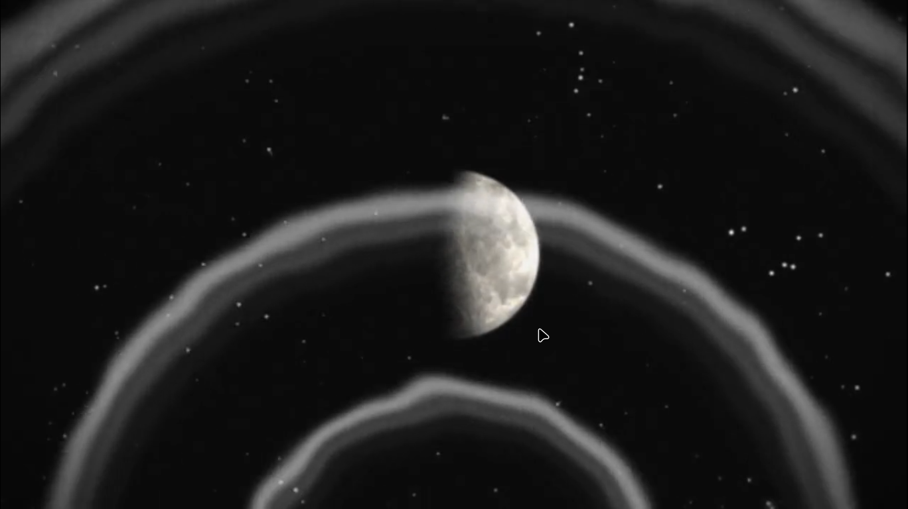Some radio waves got back after reflection , after 2.5 second radio waves done the round trip
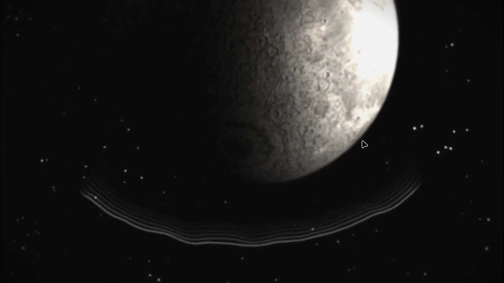The part of radio wave the does not stuck moon , still be moving
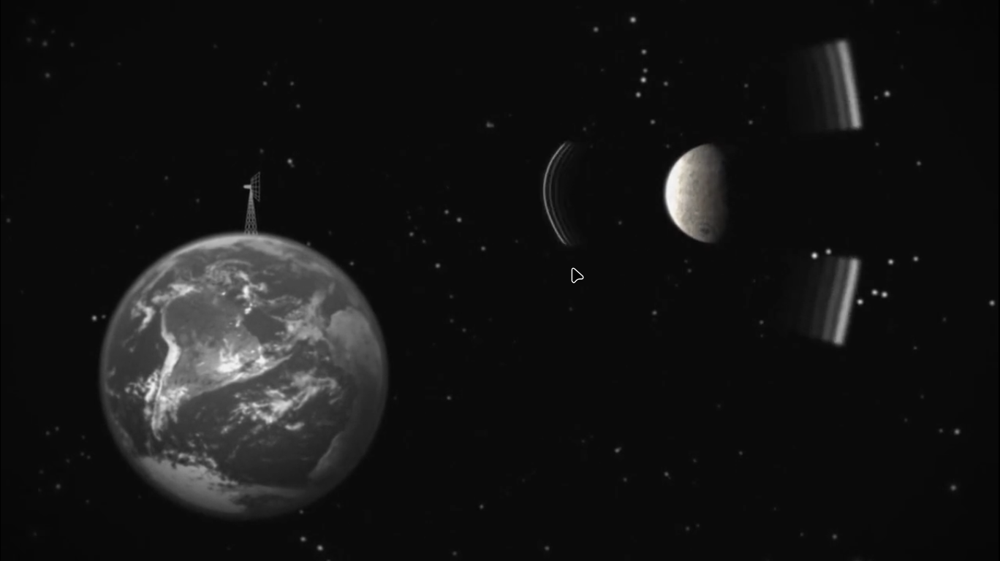A lot of radio towers were made after ww2
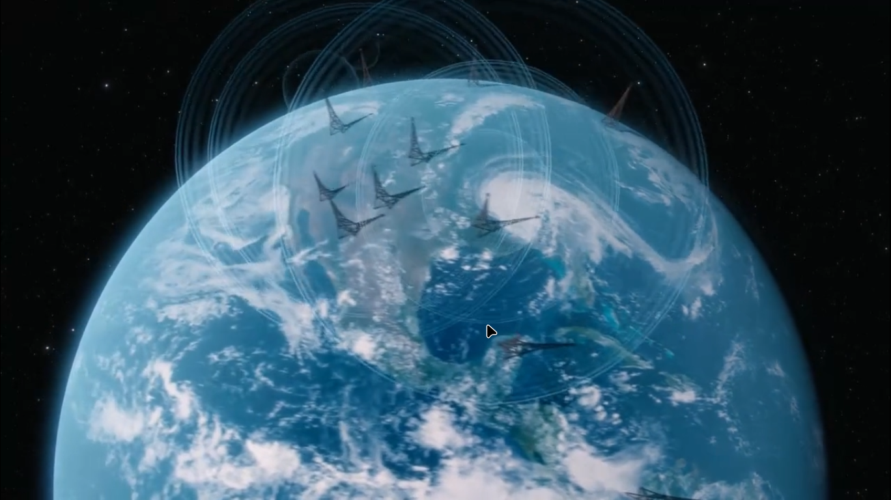 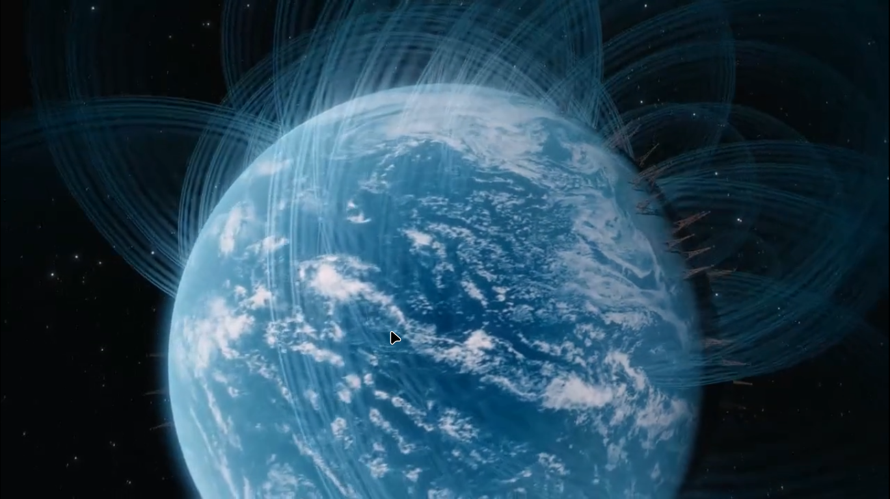ALl these radio waves are going to space at light speed , and they are very big in size
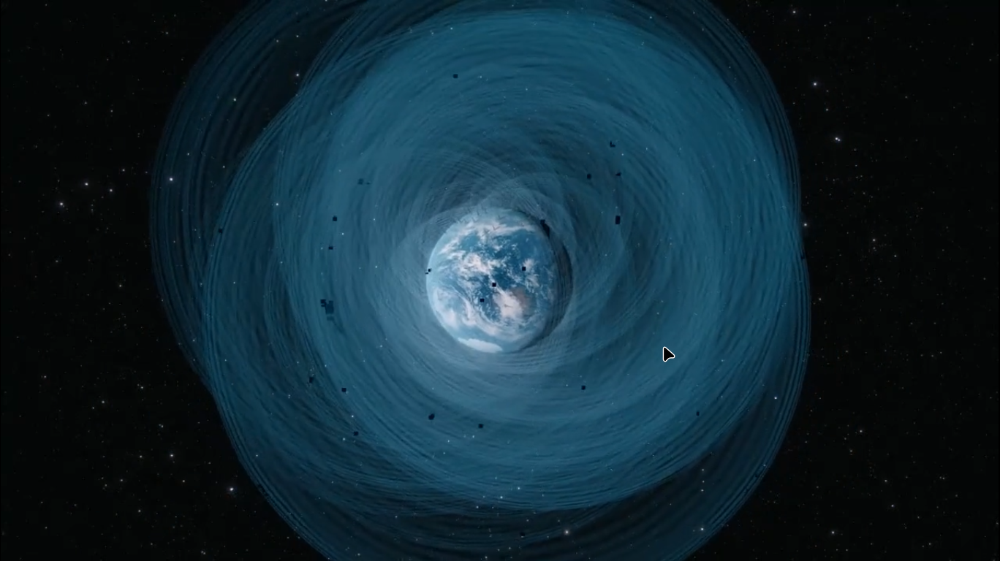 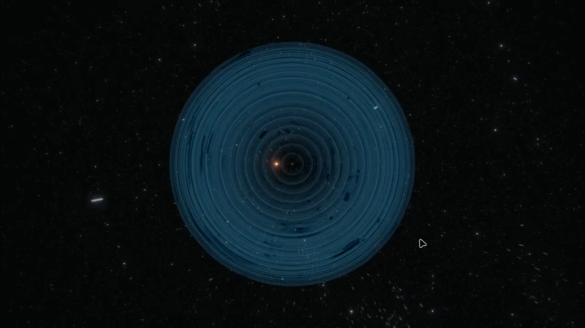 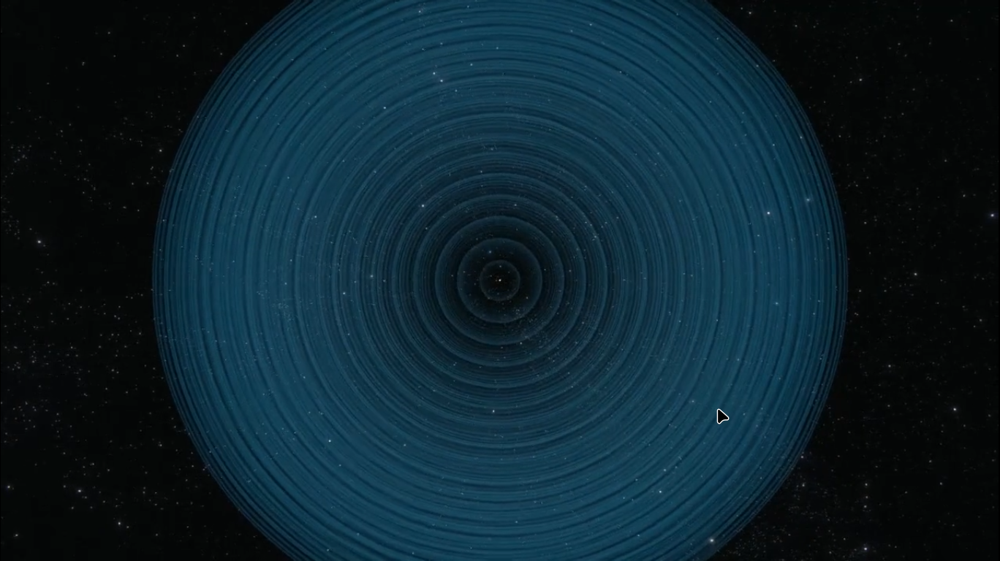Since 1960 we are listening radio waves comming from the space , but that does not carry any recognizational message
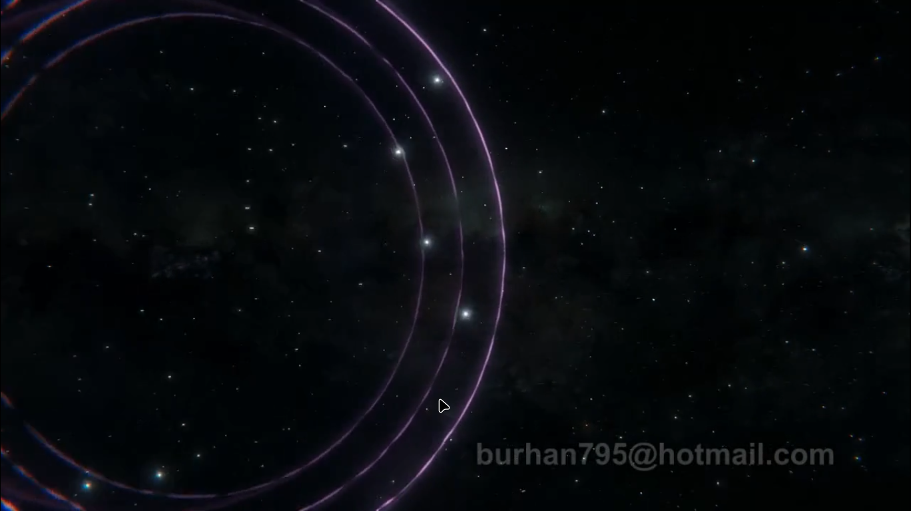We are looking for radio waves from space , maybe that is old tech , just like few centuries ago people imagined going to space with cannon ball firing
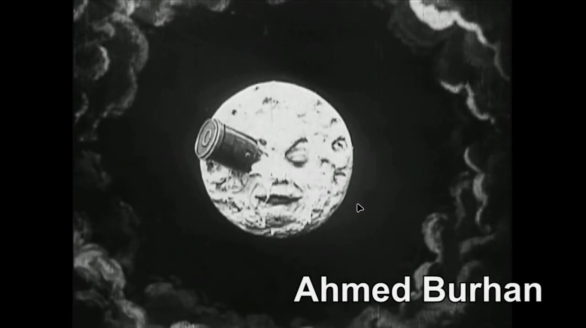 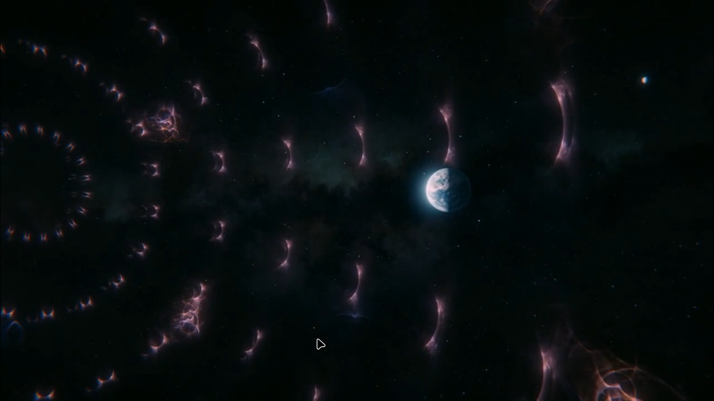WAYS A CIVILIZATION CAN BE DESTROYED
NEARBY SUPERNOVA :'s radiation Would have easily destroyed our ozone layer
VOLCANIC WINDER : destroying atomsphere
ASTEROID : striking our earth surface
What a generation failes to images , next generation achieves it
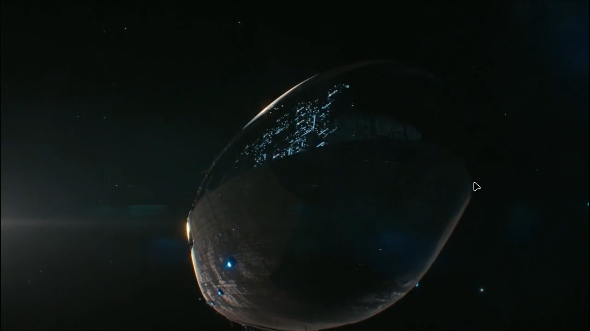